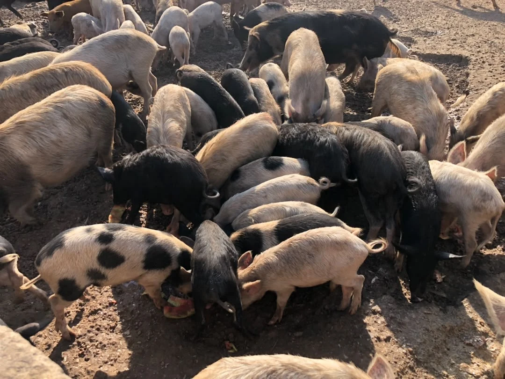

27 novembre 2026 · Gambie
Sur le terrain : échantillonnage des porcs en Gambie
Cette semaine, Jahangir Hossain nous a transmis des photographies des activités de terrain en Gambie, illustrant le volet animal du programme CCC.
L’échantillonnage des animaux, associé aux prélèvements humains et environnementaux, vise à mieux comprendre les réservoirs de Campylobacter et les voies de transmission aux enfants. Cette approche One Health contribue à orienter les futures stratégies de prévention.


Photographies : Jahangir Hossain, Gambie, novembre 2026.